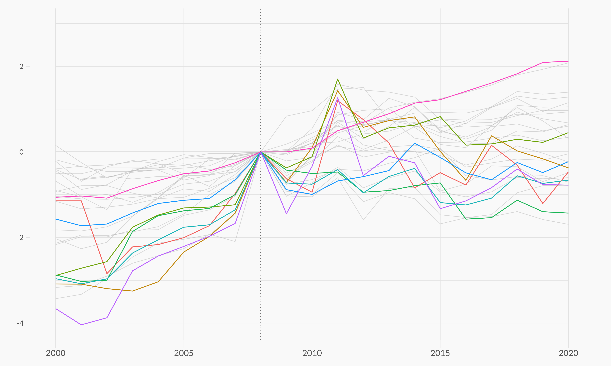
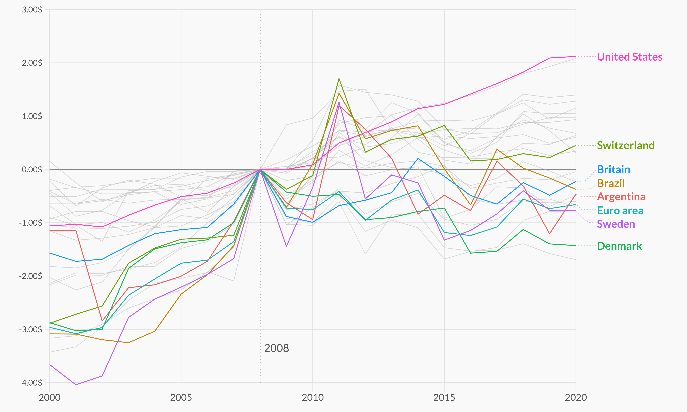
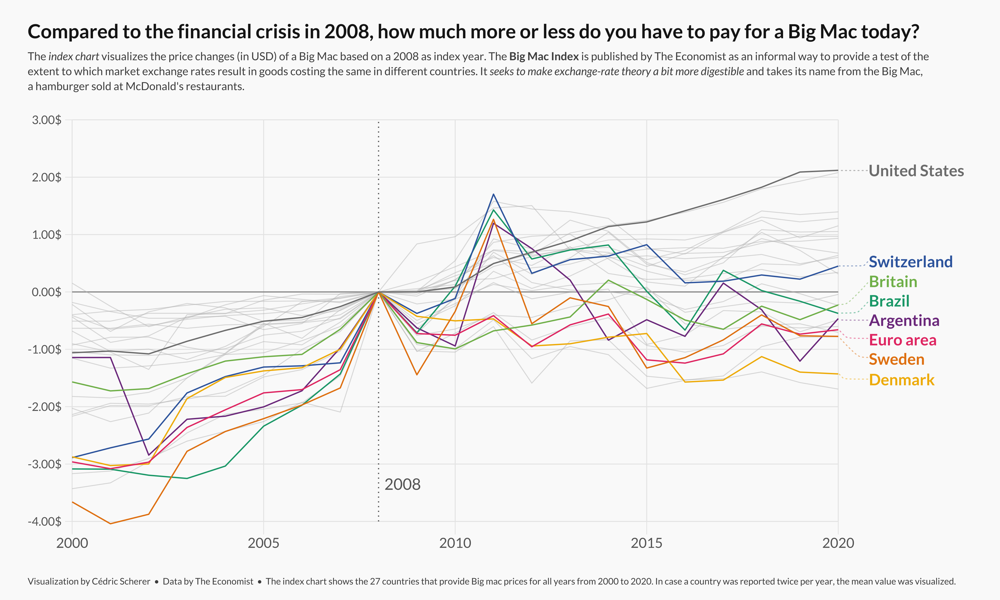

About
This page showcases the work of Cedric Scherer, built for the TidyTuesday initiative. You can find the original code on his github repository here.
Thanks to him for accepting sharing his work here! Thanks also to Tomás Capretto who split the original code into this step-by-step guide!
This is what we’re gonna build

Note the pretty sweet labels at the end of each lines. That’s definitely the most readable way to add labels on a line chart. Much better than the usual unordered legend!
Load packages
As usual, it is first necessary to load some packages before building
the figure. Today’s chart is going to use the help of
ggrepel
and
ggtext. ggrepel will make it extremely easy to automatically
position labels and ggtext is going to make it possible
to use annotations that mix normal text with italic and bold text.
library(tidyverse)
library(ggrepel)
library(ggtext)
library(showtext)
font_add_google("Lato")
showtext_auto()You can read more about the showtext package on this dedicated post.
Load and prepare the dataset
Today’s chart visualizes the price changes (in USD) of a Big Mac based on a 2008 as index year. The original source of the data is TheEconomist, but this post is based on the version released for the TidyTuesday initiative on the week of 2020-12-22. You can find the original announcement and more information about the data here.
df_mac_raw <- readr::read_csv('https://raw.githubusercontent.com/rfordatascience/tidytuesday/master/data/2020/2020-12-22/big-mac.csv')Once the data is loaded, it’s time to get the data ready for the plot.
df_mac <- df_mac_raw %>%
# Extract year
mutate(year = lubridate::year(date)) %>%
# Subset variables
select(date, year, iso_a3, currency_code, name, dollar_price) %>%
# If there is more than one record per year/country, use the mean
group_by(iso_a3, name, year) %>%
summarize(price = mean(dollar_price)) %>%
# Keep countries/regions with records for the last 21 years
# (from 2000 to 2020 inclusive)
group_by(iso_a3) %>%
filter(n() == 21)
# Also define the group of countries that are going to be highlighted
highlights <- c("EUZ", "CHE", "DNK", "SWE", "BRA", "ARG", "GBR", "USA")
n <- length(highlights)
Next, it is important to make sure the plot only shows countries that
have a Big Mac Index for 2008, the base year. The
price_index for a given country at a certain moment is
the difference between the price at that moment and the
price for that country in 2008.
countries <- df_mac %>%
filter(year == 2008) %>%
pull(iso_a3)
df_mac_indexed_2008 <- df_mac %>%
# Keep countries that have a record for 2008, the index year.
group_by(iso_a3) %>%
filter(iso_a3 %in% countries) %>%
# Compute the `price_index`
mutate(
ref_year = 2008,
price_index = price[which(year == 2008)],
price_rel = price - price_index,
# Create 'group', used to color the lines.
group = if_else(iso_a3 %in% highlights, iso_a3, "other"),
group = as.factor(group)
) %>%
mutate(
group = fct_relevel(group, "other", after = Inf),
name_lab = if_else(year == 2020, name, NA_character_)
) %>%
ungroup()Theme definition
In this occasion, the theme is defined before creating the plot. Have a look at the comments within the code below to have a better understanding of what’s going on here.
# This theme extends the 'theme_minimal' that comes with ggplot2.
# The "Lato" font is used as the base font. This is similar
# to the original font in Cedric's work, Avenir Next Condensed.
theme_set(theme_minimal(base_family = "Lato"))
theme_update(
# Remove title for both x and y axes
axis.title = element_blank(),
# Axes labels are grey
axis.text = element_text(color = "grey40"),
# The size of the axes labels are different for x and y.
axis.text.x = element_text(size = 20, margin = margin(t = 5)),
axis.text.y = element_text(size = 17, margin = margin(r = 5)),
# Also, the ticks have a very light grey color
axis.ticks = element_line(color = "grey91", size = .5),
# The length of the axis ticks is increased.
axis.ticks.length.x = unit(1.3, "lines"),
axis.ticks.length.y = unit(.7, "lines"),
# Remove the grid lines that come with ggplot2 plots by default
panel.grid = element_blank(),
# Customize margin values (top, right, bottom, left)
plot.margin = margin(20, 40, 20, 40),
# Use a light grey color for the background of both the plot and the panel
plot.background = element_rect(fill = "grey98", color = "grey98"),
panel.background = element_rect(fill = "grey98", color = "grey98"),
# Customize title appearence
plot.title = element_text(
color = "grey10",
size = 28,
face = "bold",
margin = margin(t = 15)
),
# Customize subtitle appearence
plot.subtitle = element_markdown(
color = "grey30",
size = 16,
lineheight = 1.35,
margin = margin(t = 15, b = 40)
),
# Title and caption are going to be aligned
plot.title.position = "plot",
plot.caption.position = "plot",
plot.caption = element_text(
color = "grey30",
size = 13,
lineheight = 1.2,
hjust = 0,
margin = margin(t = 40) # Large margin on the top of the caption.
),
# Remove legend
legend.position = "none"
)
Have you ever seen the element_markdown() in
plot.subtitle() above? That function comes with the
ggtext() package and makes it possible to use markdown
syntax to format the text. It’s like magic!
Basic chart
Today’s chart is a lineplot that visualizes the price changes (in USD)
of a Big Mac based on a 2008 as index year. The countries in the
vector highlights have different colors to stand out from
the rest and make it easier to track their evolution along time.
Sounds quite exciting, let’s get started!
plt <- ggplot(
# The ggplot object has associated the data for the highlighted countries
df_mac_indexed_2008 %>% filter(group != "other"),
aes(year, price_rel, group = iso_a3)
) +
# Geometric annotations that play the role of grid lines
geom_vline(
xintercept = seq(2000, 2020, by = 5),
color = "grey91",
size = .6
) +
geom_segment(
data = tibble(y = seq(-4, 3, by = 1), x1 = 2000, x2 = 2020),
aes(x = x1, xend = x2, y = y, yend = y),
inherit.aes = FALSE,
color = "grey91",
size = .6
) +
geom_segment(
data = tibble(y = 0, x1 = 2000, x2 = 2020),
aes(x = x1, xend = x2, y = y, yend = y),
inherit.aes = FALSE,
color = "grey60",
size = .8
) +
geom_vline(
aes(xintercept = ref_year),
color = "grey40",
linetype = "dotted",
size = .8
) +
## Lines for the non-highlighted countries
geom_line(
data = df_mac_indexed_2008 %>% filter(group == "other"),
color = "grey75",
size = .6,
alpha = .5
) +
## Lines for the highlighted countries.
# It's important to put them after the grey lines
# so the colored ones are on top
geom_line(
aes(color = group),
size = .9
)
plt

That’s a pretty good start! Having different colors for some countries definetely makes it much easier to track their price index evolution.
Add non-overlapping labels
Although colors are a tremendous help, they don’t reveal which country the lines represent. Wouldn’t it be nice to have a label on the end of each line that tells which country it represents?
It is pretty challenging to add many labels on a plot since labels
tend to overlap each other, making the figure unreadable. Fortunately,
the ggrepel package is here to help us. It provides an
algorithm that will automatically place the labels for us. Let’s do
it!
plt <- plt +
annotate(
"text", x = 2008.15, y = -3.35,
label = "2008",
family = "Lato",
size = 8,
color = "grey40",
hjust = 0
) +
geom_text_repel(
aes(color = group, label = name_lab),
family = "Lato",
fontface = "bold",
size = 8,
direction = "y",
xlim = c(2020.8, NA),
hjust = 0,
segment.size = .7,
segment.alpha = .5,
segment.linetype = "dotted",
box.padding = .4,
segment.curvature = -0.1,
segment.ncp = 3,
segment.angle = 20
) +
## coordinate system + scales
coord_cartesian(
clip = "off",
ylim = c(-4, 3)
) +
scale_x_continuous(
expand = c(0, 0),
limits = c(2000, 2023.5),
breaks = seq(2000, 2020, by = 5)
) +
scale_y_continuous(
expand = c(0, 0),
breaks = seq(-4, 3, by = 1),
labels = glue::glue("{format(seq(-4, 3, by = 1), nsmall = 2)}$")
)
plt

Wonderful! It’s amazing how a few annotations can hugely improve the readability of the plot.
Final chart
The chart above is pretty close from being publication ready. What’s needed now is a better color palette to improve the appearence of the plot and a good annotations to make the chart more insightful:
plt <- plt +
scale_color_manual(
values = c(rcartocolor::carto_pal(n = n, name = "Bold")[1:n-1], "grey50")
) +
labs(
title = "Compared to the financial crisis in 2008, how much more or less do you have to pay for a Big Mac today?",
subtitle = "The <i>index chart</i> visualizes the price changes (in USD) of a Big Mac based on a 2008 as index year. The <b>Big Mac Index</b> is published by The Economist as an informal way to provide a test of the<br>extent to which market exchange rates result in goods costing the same in different countries. It <i>seeks to make exchange-rate theory a bit more digestible</i> and takes its name from the Big Mac,<br>a hamburger sold at McDonald's restaurants.",
caption = "Visualization by Cédric Scherer • Data by The Economist • The index chart shows the 27 countries that provide Big mac prices for all years from 2000 to 2020. In case a country was reported twice per year, the mean value was visualized."
)
plt

Finally, note the <i>, <b>, and
<br> tags. It’s ggtext the one who
makes that possible. It’s fantastic!